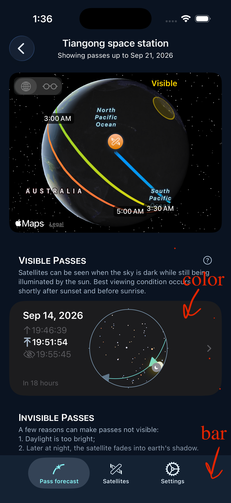
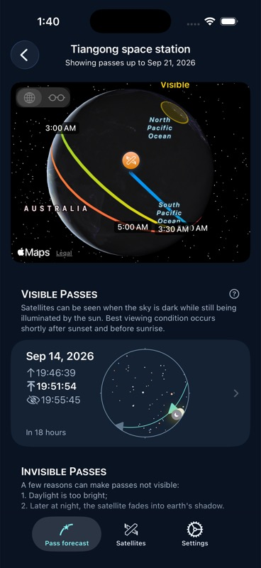
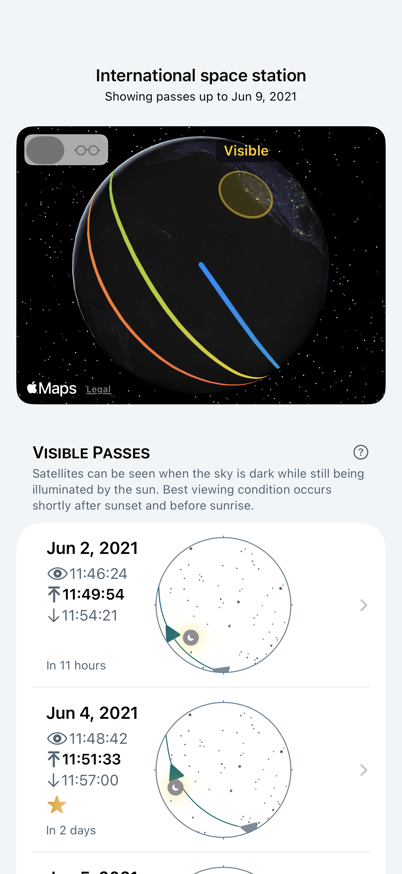

Pass cards and tab bar
Pass rows now use the shared navy card surface instead of system gray. Secondary times use the theme’s readable muted text. The tab bar shares the page background, with a subtle divider and the native selected-tab indicator providing separation.
Before · reported screen

After · simulator

These are live simulator captures taken at different times, so the map and orbital positions differ. The app currently forces dark appearance; light palette coverage is checked through the hosted screenshot fixture.
Light palette · hosted fixture

Validation: simulator build and launch succeeded; all 38 behavior tests passed. The two selected pass-list screenshot comparisons differ from old baselines, as expected for changed colors and live MapKit imagery. Baselines were not overwritten.